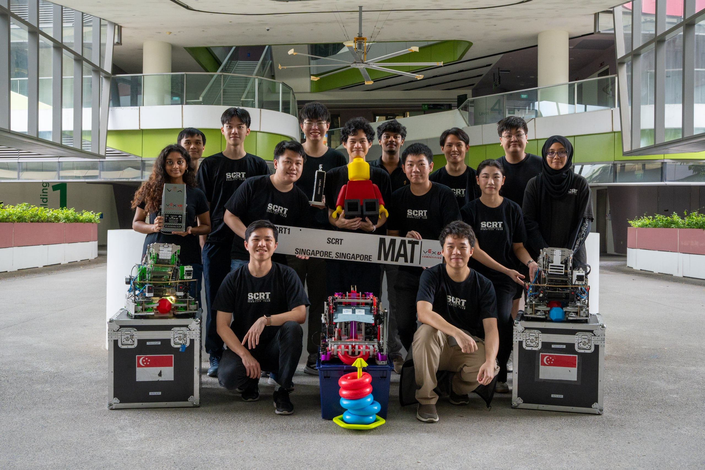

Back
Two competition robots — codenamed Jetson & Huang — built for the 2025–26 VEX V5RC Push Back season. Computer vision, pneumatic magazines, and a fully iterative design process across 5 months of development.
Two robots,
one season
Team SCRT1 is SUTD's university-level competitive robotics team, founded in 2023 to bring VEX U competition to Singapore at the university scale. The 2025–26 Push Back season saw the team build two distinct robots from scratch — a 15" robot (Jetson) and a 24" robot (Huang) — each with modular subsystems developed through rapid iteration across hardware, software, and strategy teams.
Push Back is a game centred around scoring cylindrical blocks into long goals and an elevated centre goal, with significant points awarded for autonomous performance and strategic descoring. The team's target was to build a robot capable of holding 8–14 blocks, securing the long goal, and running a reliable autonomous routine using computer vision.
Season targets: Hold ≥8 blocks (optimal 14), secure the long goal, achieve a reliable autonomous win with computer vision block detection, and compete at the Singapore V5RC Tournament and Asia Open Signature Event.

Subsystem Development
How the robot
came together
Every major subsystem went through multiple design iterations, with the team logging decisions, failures, and fixes in the engineering notebook. Below are the four core systems and the key engineering choices made.
Magazine — V1 through V4
The magazine (block storage and scoring system) was the most iterated subsystem. Early dual-magazine designs were scrapped because they couldn't fit within the 15" robot envelope. The final design uses a roller-coaster layout: 4 small rollers (50mm), 1 large roller (90mm, also the hinge point), and an indexer roller for controlled release. The upper section is pneumatically actuated via a 50mm piston, reaching either the long goal or the centre upper goal. A passive end-flap prevents blocks from escaping while scoring.
Computer Vision — Jetson Nano + Global Shutter Camera
The initial VEX AI camera was plagued by motion blur and rolling shutter artefacts, causing the robot to "go blind" during fast movements. The team switched to a USB global shutter camera running at 90 FPS with a 160° FOV. A custom calibration GUI was built to streamline homography and distortion correction for both robots. A Jetson Nano runs the detection pipeline, communicating with the V5 brain over TTL. Final CV latency: ~100ms.
The Yoinker — A Late Addition
With the hardware team insisting development was frozen, the software lead advocated for a last-minute tool to drag blocks from the parking zone during skills runs — dubbed the "Yoinker." V1 used a slim 2mm PETG L-bracket that proved too fragile. V2 thickened it to 7mm, embedded the nylock nut, and shifted the pivot point 20mm rearward to clear intake interference.
Drivetrain & Tracking Wheels
The base runs 10 × 11W motors in the drive. Tracking wheels for odometry initially used a double-row 2" omni wheel split in half — which repeatedly snapped the plastic shaft on the parking zone lip. The fix: a purpose-built single-row omni wheel with a stainless steel high-strength shaft. A VEX IMU and two rotation sensors complete the localisation system.


Competition Results
On the
field
At the Singapore V5RC Tournament in November 2025 — the team's first external competition run — SCRT1 scored 20 points in autonomous programming skills and 72 in driver skills, placing around 5th at the time of posting. As the only VEXU team in Singapore, the team ran their skills challenge within the MS/HS competition timeframe, with only a tight 45-minute window to clock their runs.
Post-tournament development focused on fixing CV reliability under different lighting conditions, improving intake consistency, and preparing both robots for the Asia Open Signature Event in December 2025. The team also ran two full scrimmages against teams from Innovac Makerspace (including 8068E) to sharpen driver practice and strategy before the trip.